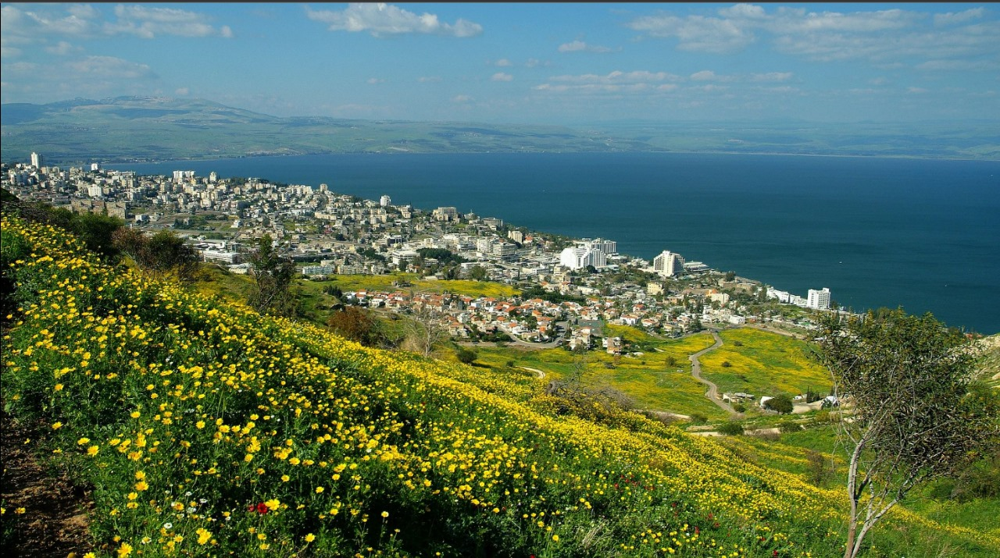
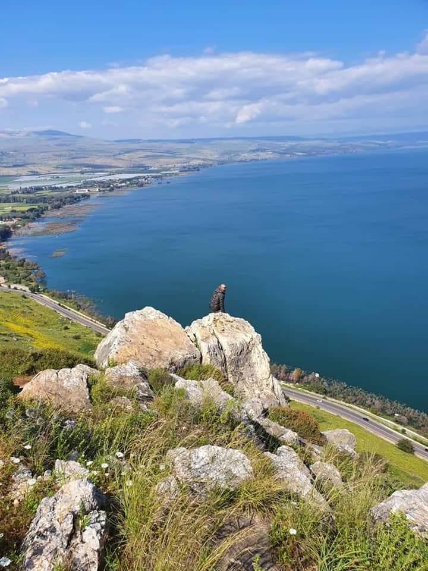

تعرف على طبريا

طبريا
(اعرق مدن فلسطين)
"طبريا أو طبرية هي من أقدم مدن فلسطين التاريخية, يوجد في المدينة الكثير من المعالم التاريخية التي تظهر عراقة"

طبريا
(معمار طبريا)
"فيها آثار المساجد والكنائس والمعابد بالإضافة إلى الآثار المعمارية مثل السرايا والقباب والعيون وغير ذلك
وصفها أمير البيان بأنها "كانها في صفائها فلك"

طبريا
المتنبي يحني راسه
"وقال عنها المتنبي: "لولاك لم أترك البحيرة والغـــور دفـيء ومـاؤها شبــم